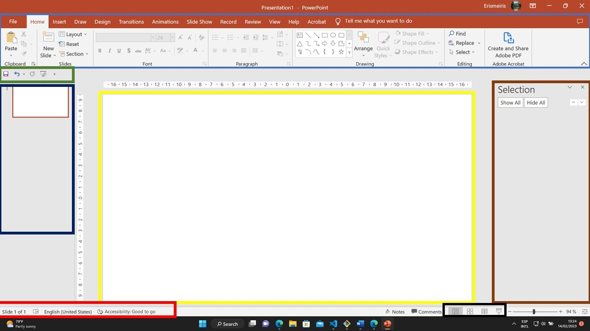

<div class="row">
  <div class="col">
    <div class="card shadow-sm">
      
      <div class="card-body">
        <h4 class="card-text">
          The PowerPoint interface consists of several key components, including:
        </h4>
        <p class="card-text">
          <span style="border: solid 4px blue"> &nbsp; &nbsp; &nbsp; </span> 
          <strong >Ribbon: </strong> The ribbon is the primary navigation area in PowerPoint and is
          located at the top of the screen. It contains tabs for various categories of commands and tools, such as Home,
          Insert, Design, Animations, and Review.
        </p>
        <p class="card-text">
          <span style="border: solid 4px yellow"> &nbsp; &nbsp; &nbsp; </span> 
          <strong>Slide Area:</strong> The slide area is where you create and edit your slides. It is
          located in the center of the screen and displays the current slide in your presentation.
        </p>
        <p class="card-text">
          <span style="border: solid 4px brown"> &nbsp; &nbsp; &nbsp; </span> 
          <strong>Task Pane: </strong>
          The task pane is a narrow window that displays additional information and options related to the task you are
          currently working on. It can be displayed or hidden as needed.
        </p>

        <p class="card-text">
          <span style="border: solid 4px red"> &nbsp; &nbsp; &nbsp; </span> 
          <strong>Status Bar: </strong>The status bar is located at the bottom of the screen and
          provides information about the current slide, including the slide number, and the zoom level.
        </p>
        <p class="card-text">
          <span style="border: solid 4px green"> &nbsp; &nbsp; &nbsp; </span> 
          <strong>Quick Access Toolbar:</strong>The Quick Access Toolbar is a customizable toolbar
          located above the ribbon that provides quick access to frequently used commands.
        </p>
        <p class="card-text">
          <span style="border: solid 4px red"> &nbsp; &nbsp; &nbsp; </span> 
          <strong>Slide Thumbnails: </strong>The slide thumbnails are located on the left side of the screen and provide
          a visual representation of all the slides in your presentation. You can click on a thumbnail to jump to a
          specific slide.
        </p>
        <p class="card-text">
          <span style="border: solid 4px black"> &nbsp; &nbsp; &nbsp; </span> 
          <strong>View Buttons: </strong>The view buttons, located on the right side of the status bar, allow you to
          switch between different views of your presentation, such as Normal View, Slide Sorter View, and Notes Page
          View.
        </p>


      </div>
    </div>
  </div>

</div>